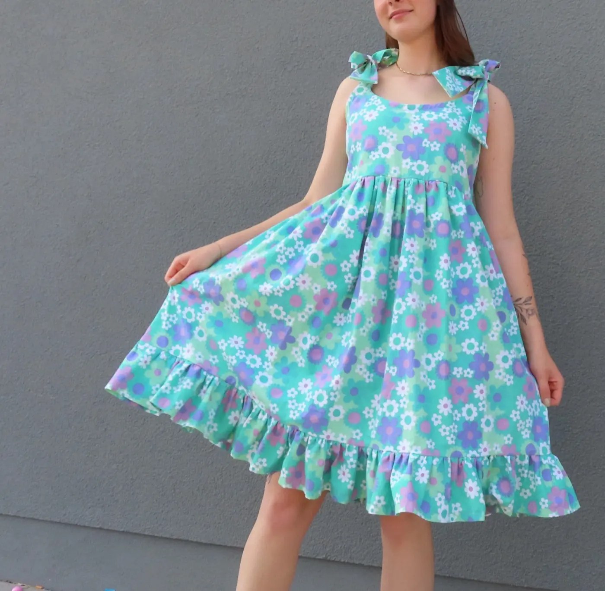
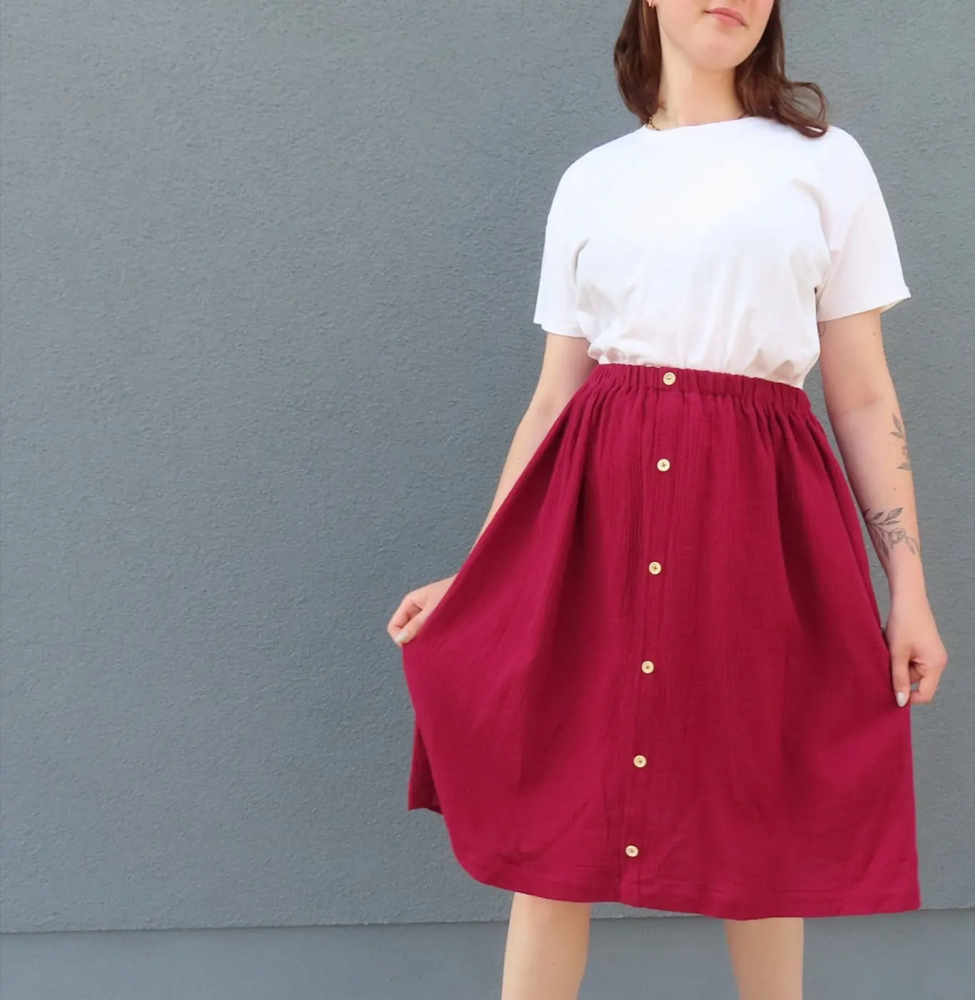

Hallo aus Ramsen in der Pfalz!
Flora & Grete Handgemachte Einzelstücke
Röcke mit Taschen, Kleider aus echter Vintage-Bettwäsche, Liberty-Kragen für jeden Pulli. Ich nähe alles selbst in meinem Mini-Atelier – vieles auf deine Maße, manches gibt es nur ein einziges Mal.
5,0 aus 38 Bewertungen · 115 Verkäufe · auf Etsy seit 2021
 Cathrin
Cathrin
Schneiderin mit Herz und Seele



frisch vom Nähtisch
Meine Lieblingsstücke
Das sind gerade meine Lieblinge. Klick auf ein Stück, dann zeige ich dir alle Fotos, Stoffe und Details – bestellt wird ganz bequem über Etsy.
mein Laden
Bestellen kannst du auf Etsy
Dort bezahlst du sicher und bequem. Jedes Päckchen packe ich selbst – plastikfrei im Graskarton, auf Wunsch als Geschenk.
Zu Flora & Grete auf Etsy- 5,0 aus 38 Bewertungen
- 115Verkäufe
- seit2021auf Etsy
- 81Fans auf Etsy
einmal quer durch die Stoffschublade
Alle Stücke
Wähl einen Stoffstreifen, um zu filtern – oder stöber einfach drauflos.


über mich
Steckbrief von Cathrin
hier trefft ihr mich
Termine & Aktuelles
Märkte, Atelier & Kurse
komm vorbei!
Anprobe im Atelier
Bei einer Anprobe nehmen wir gemeinsam Maß, du fühlst die Stoffe und probierst Röcke und Kleider in Ruhe an. Danach nähe ich dein Stück genau für dich – oder wir stecken ab, was noch angepasst werden soll.
- Tag aussuchen
- freie Uhrzeit wählen
- kurz eintragen, worum es geht
Ich melde mich persönlich bei dir und bestätige den Termin. ♡
hier nähe ich
Atelier & Kontakt
- Mini-Atelier in Ramsen
67305 Ramsen, Pfalz (Rheinland-Pfalz)
Die genaue Adresse bekommst du mit deiner Terminbestätigung. - Schreib mir über Etsy
Im Shop auf „Nachricht senden“ klicken – ich antworte meist am selben Tag. - Instagram @floraundgrete
Neue Stoffe, Blick ins Atelier und manchmal Struppi.
gut zu wissen